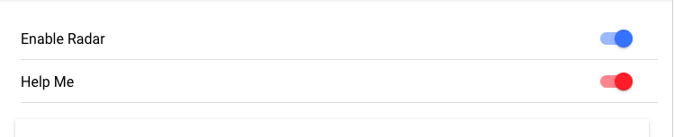
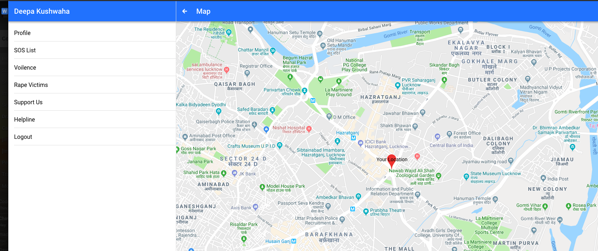

Girl's Safety and Security System
INTRODUCTION
The project Girl's Safety and Security System is based on total protection of women from crime, threat and provide secure, safe and fearless environment.
Today in the current global scenario, the prime question in every girl’s mind, taking into account the ever rising increase of issues on women harassment in recent past, is only about her safety and security. The only thought haunting every girl is when they will be able to move freely on the streets even in odd hours without worrying about their security. This project suggests a new perspective to use technology to protect women. The system resembles a normal cloves which when activated, tracks the location of the victim using GPS (Global Positioning System) and sends emergency messages using GSM (Global System for Mobile communication), to three emergency contacts and the police control room. The system also incorporates a screaming alarm that uses real time clock, Also pressure sensor in the band will indicate whether the band is being damaged or not. In this case a red alert message in a periodic update will be issued that the particular women is under attack.
We came up with the Ideas of the Emergencies in the respective so we have provided with the two special features in the application to enable the safety system.
- Emergency Mode which is choosed in the scenerio when the girl is actually trapped.
- Second one is the Radar Mode in which it keeps on sending the GPS location of the user in case where the women feels unsafe. 
- We have also integreated the Angular Google Maps to gve the location of the user. 
- We have also provided the feature of the news feed where the users can post their status and share the ideas. And people can like and comment in the real time.
- We are also looking into the integration fo the mobile text to the user's contacts.
Why we choose to work on this project topic?
Even when the world evolves day by day, sexual abuse against women doesn't decrease. Instead it increases day by all over the world. Conventional security systems don’t provide much solution to this social problem. Hence to provide a possible solution by using a this project that will be cost effective and easy to use which will reduce the crime rate against women. It can also be used in case of medical emergency of those women. Since this is an era of wearable technology, this band concept can be used in versatile applications as well as future enhancements is much possible in all dimensions of the needy world. I've chosen this project because providing a solution to one of the most important social problem will make me happy as well as will make the world more peaceful than today's world.
The world is becoming so much more unsafe for women. Social evils like molestations, dowry, crime against women. Incidents of crime against women have been increasing at an alarming pace in Indian cities, most common incidents being rape, kidnapping, sexual harassment and eve teasing. Security for women is still a major issue. In this age of technology, mobile phone is one gadget almost everyone uses to keep in touch with family and friends. All they need is a device that can be carried around easily and worn whenever the woman feels unsafe. Women safety and security has emerged as a key concern for the country over the recent years. In this project suggests a new perspective to use technology to protect women. The system resembles a smart bell which when activated, tracks the location of the victim using GPS (Global Positioning System) and sends emergency messages using GSM (Global System for Mobile communication), to two emergency contacts and the police control room. The system also incorporates a screaming alarm to call out for help.